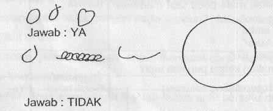

Kuesioner Praskrining untuk Anak 48 bulan
- Dapatkah anak mengayuh sepeda roda tiga sejauh sedikitnya 3 meter?
- Setelah makan, apakah anak mencuci dan mengeringkan tangannya dengan baik sehingga anda tidak perlu mengulanginya?
- Suruh anak berdiri satu kaki tanpa berpegangan. Jika perlu tunjukkan caranya dan beri anak anda kesempatan melakukannya 3 kali. Dapatkah ia mempertahankan keseimbangan dalam waktu 2 detik atau lebih?
- Letakkan selembar kertas seukuran buku ini di lantai. Apakah anak dapat melompati panjang kertas ini dengan mengangkat kedua kakinya secara bersamaan tanpa didahului lari?
- Jangan membantu anak dan jangan menyebut lingkaran. Suruh anak menggambar seperti contoh ini di kertas kosong yang tersedia. Dapatkah anak menggambar lingkaran?

- Dapatkah anak meletakkan 8 buah kubus satu persatu di atas yang lain tanpa menjatuhkan kubus tersebut? Kubus yang digunakan ukuran 2.5 – 5 cm.
- Apakah anak dapat bermain petak umpet, ular naga atau permainan lain dimana ia ikut bermain dan mengikuti aturan bermain?
- Dapatkah anak mengenakan celana panjang, kemeja, baju atau kaos kaki tanpa di bantu? (Tidak termasuk memasang kancing, gesper atau ikat pinggang)
- Dapatkah anak menyebutkan nama lengkapnya tanpa dibantu? Jawab TIDAK jika ia hanya menyebutkan sebagian namanya atau ucapannya sulit dimengerti.